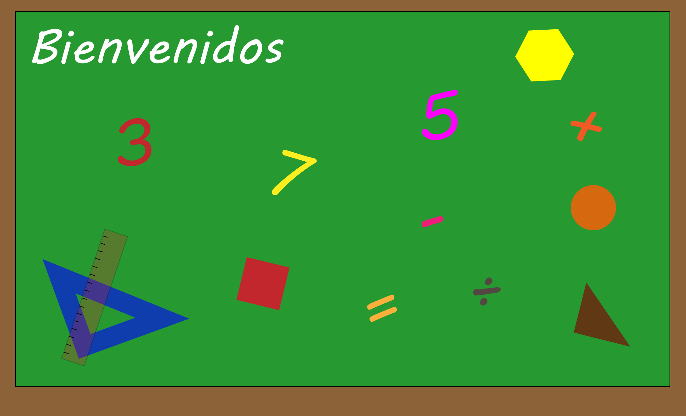

Bienvenido al mundo de las Matemáticas
Las matemáticas son una ciencia que a partir de números, signos, letras y símbolos nos sirven para resolver problemas, nos ayudan a comprender y analizar las cosas, pero ademas es un mundo maravilloso de contenidos. No le temas y sácale provecho al máximo.
¿Para qué sirven las matemáticas?
A continuación, puedes ver un video animado donde podrás entender para que sirven las matemáticas.